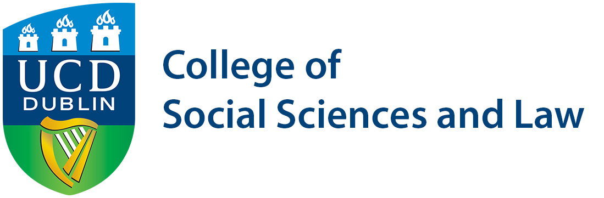
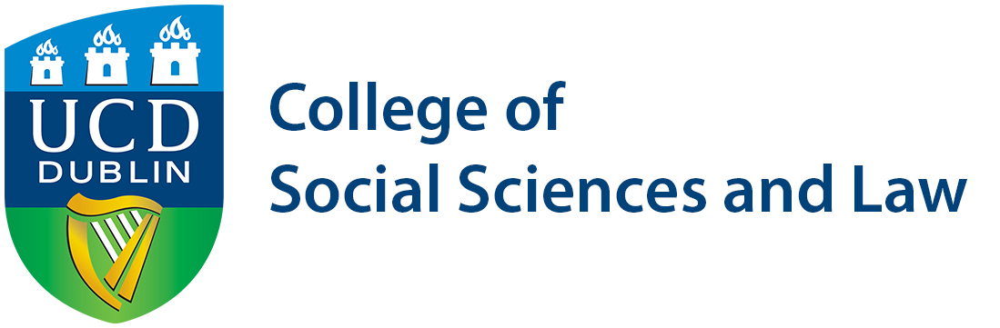

Organisers
Bahareh Heravi
@Bahareh360
Bahareh is an Assistant Professor in the School of Information and Communication Studies at University College Dublin, where she is the the Postgraduate Director and the Director of the newly found Data Journalism certification programme, commencing in September 2017. Prior to joining UCD, Bahareh was the Head of Insight News Lab at the Insight Centre for Data Analytics at the National University of Ireland, Galway. During this time she led a number of R&D projects with the Irish National TV and Radio broadcaster, RTÉ. Bahareh is the former Lead Data Scientist at The Irish Times and the founder of Hacks/Hackers Dublin.
Glyn Mottershead
@glynmottershead
A former newspaper reporter, feature writer, subeditor and production journalist, Glyn has worked across a range of news beats including crime, health and local government. Glyn is a co-author of The 21st Century Journalism Handbook and specialises in Digital Journalism and Data Journalism. He is a member of Investigative Reporters and Editors, and the Online News Association. Glyn is the co-director of the MSc Computational and Data Journalism at Cardiff University. He teaches at undergraduate and postgraduate levels, specialising in digital and data journalism. He is one of the founders of Hacks/Hackers South Wales X South West.

Martin Chorley
@martinjc
Martin is a lecturer in the School of Computer Science & Informatics at Cardiff University, where he is course director for the MSc Computational and Data Journalism, chair of Postgraduate operations, and Deputy Director of Learning and Teaching. His research is primarily focused in the areas of computational journalism and mobile and social computing, where he examines the ways in which humans and society interact with systems and technology. He teaches web development, data analysis and visualisation. He is one of the organisers of the PyDiff meetup in Cardiff, and is also one of the founders of Hacks/Hackers South Wales X South West.
Program Committee
- James Hamilton (Stanford University, U.S.)
- Nicholas Diakopoulos (University of Maryland, U.S.)
- Meredith Broussard (New York University, U.S.)
- Cheryl Phillips (Stanford University, U.S.)
- Eddy Borges Rey (University of Stirling, Scotland, U.K.)
- Marc Esteve del Valle (University of Groningen, The Netherlands)
- Miranda McLachlan (Goldsmiths, University of London, U.K.)
- Stefano Ceccon (The Times and The Sunday Times, U.K.)
- Jonathan Gray (University of Bath, U.K.)
- Paul Bradshaw (Birmingham City University, U.K.)
- Bahareh Heravi (University College Dublin, Ireland)
- Glyn Mottershead (Cardiff University, Wales, U.K.)
- Martin Chorley (Cardiff University, Wales, U.K.)
 
